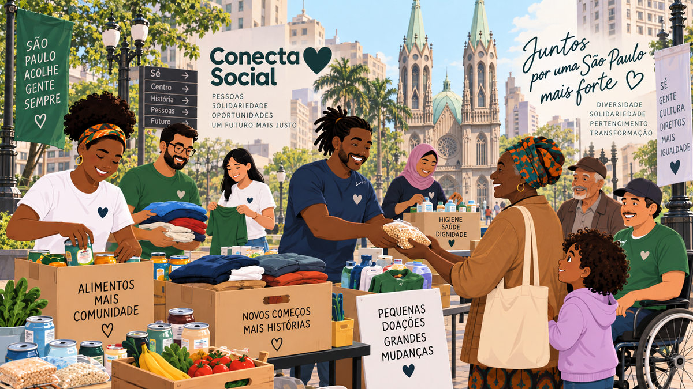

Doações
Alimentos, roupas e itens de higiene
Esta campanha fictícia propõe reunir itens essenciais para apoiar ações comunitárias. O visitante pode informar, no cadastro demonstrativo, que deseja contribuir com doações.
Quero doar